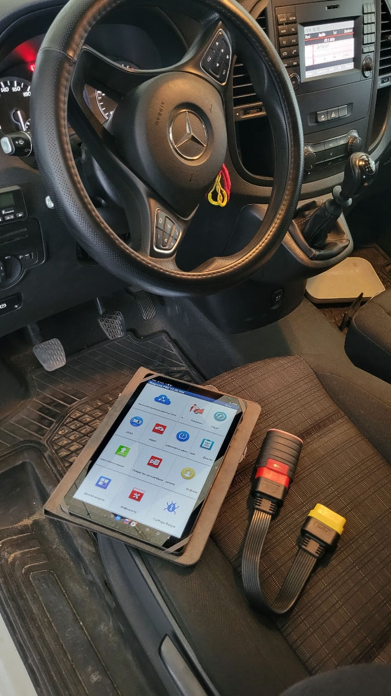
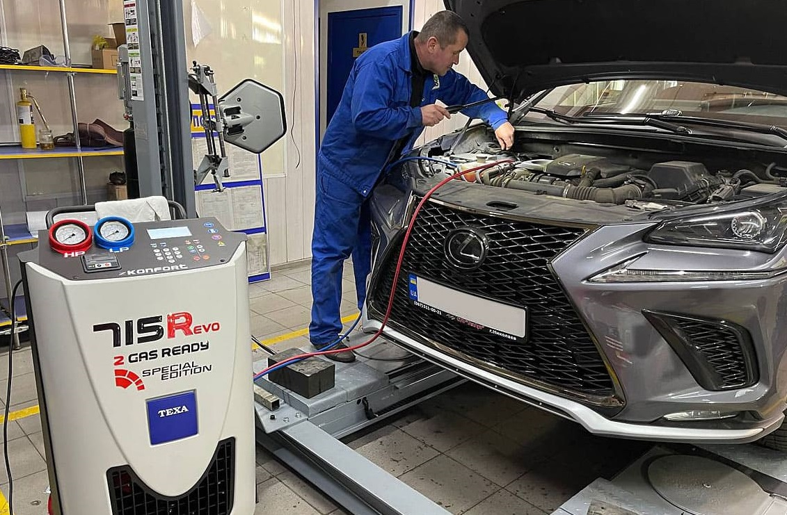
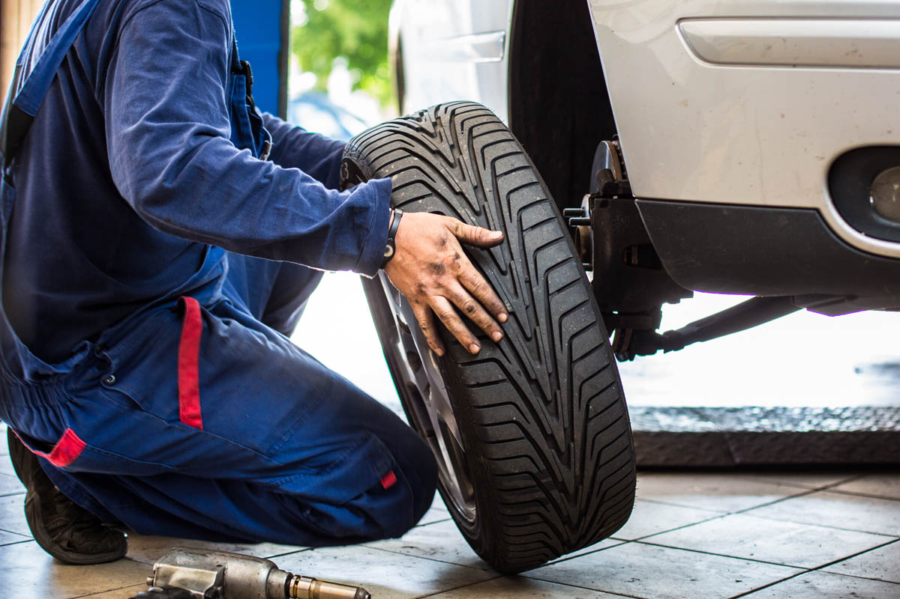
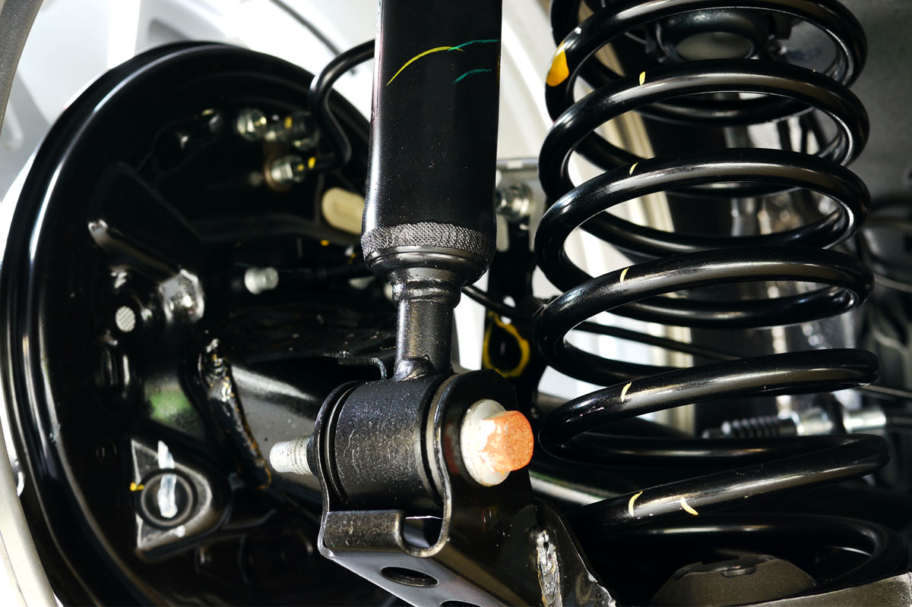

Schimb Ulei & Filtre
Oferim servicii complete de schimb ulei motor cu produse de înaltă calitate: Castrol, Mobil, Shell. Includem înlocuirea filtrului de ulei, aer, habitaclu și combustibil. Lucrarea include și inspecția vizuală a motorului.
- Ulei sintetic 5W-30 / 5W-40 / 0W-40
- Filtru ulei OEM sau echivalent
- Filtru aer + habitaclu opțional
- Resetare indicator ulei
Programează-te

Diagnosticare Electronică
Scanăm complet sistemele electronice ale vehiculului folosind echipamente profesionale Launch X431, Autel MaxiSys. Identificăm erorile din motor, transmisie, ABS, airbag, climatizare și alte sisteme.
- Scanare OBD2 completă
- Ștergere coduri de eroare
- Raport detaliat scris
- Estimare costuri reparație
Programează-te

Climatizare & Aer Condiționat
Verificare completă și reparare sistem AC: compresoare, condensatoare, evaporatoare, robinete de expansiune. Încărcare freon R134a și R1234yf. Curățare și dezinfectare sistem AC.
- Verificare etanșeitate sistem
- Încărcare freon (toate tipurile)
- Reparare compresoare
- Curățare + dezinfectare
Programează-te

Anvelope & Jante
Servicii complete pentru anvelope și jante: montaj, demontaj, echilibrare, aliniere și depozitare sezonieră. Colaborăm cu cele mai mari branduri: Michelin, Continental, Bridgestone, Pirelli.
- Montaj / demontaj anvelope
- Echilibrare dinamică
- Aliniere geometrie (unghi Toe, Camber)
- Vulcanizare la rece / cald
- Depozitare sezonieră
Programează-te

Frâne & Suspensie
Siguranța pe drum este prioritatea noastră. Verificăm și înlocuim componentele sistemului de frânare și suspensie folosind piese originale sau de calitate echivalentă cu garanție de 12 luni.
- Înlocuire plăcuțe față/spate
- Strunjire / înlocuire discuri
- Înlocuire amortizoare
- Reparare etrier frână
- Reglare frână de mână
Programează-te

ITP & Revizie Completă
Pregătim vehiculul tău pentru inspecția tehnică periodică și efectuăm revizii complete conform specificațiilor producătorului. Includem verificarea a peste 50 de puncte tehnice.
- Pre-ITP: verificare 50+ puncte
- Revizie la intervale km/timp
- Setare distribuție (curea/lanț)
- Verificare lichide (frână, servodirecție, răcire)
Programează-te